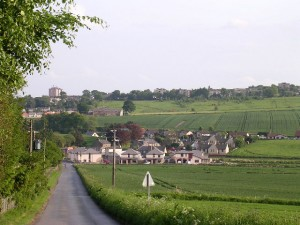

The next meeting of the Community Council will be held in Strathmartine Primary School on Thursday 29th August at 7.30pm.
It is hoped to have guest speakers from SEPA and Angus Council to discuss flooding issues.
The Community Council submission to Angus Council in response to the current planning applications from redevelopment of the former Strathmartine Hospital restates our opposition to any proposal for more than 40 units of housing (as per the local plan) as detrimental to the amenity and environment of the existing community.
Our questionairre on the issue showed 95% opposition to the proposed 198 units of new build and the Community Council submission reflects this clear expression of the views of the community.
Please see the following attachment: 201305_LetterEIAM
The Community Council have tried to deliver a questionaire to every elector in our area. If you have not received one please contact us by emailing mccabeduncan@gmail.com
Questionaires should be returned by Sunday 12th May. Thank you.
Draft minutes for the last Community Council meeting.
The July 2011 submission by Strathmartine Community Council to the agents for the developer of the Hospital site. This still represents the SCC position on this matter.
Two separate applications have been submitted to Angus Council. One is a Full Application for change of use into 24 flats with demolition of extensions. Also demolition of listed Laundry building.
The other is for planning permission in principle for redevelopment of the site including new build and the conversion to residential and community use, access, landscape and infrastructure works. The number of new build to be up to 172 units.
The Community Council is currently seeking the views of residents and will be distributing a short questionaire to all househlods over the next week or so. However any individual may make an objection to either or both application in writing to Angus Council by 17 May. Click here for guidance on how to do this.
The next meeting will be held on Thursday 25 April at 7.30pm in Strathmartine Primary School.
Another well-attended meeting of the Community Council. Unfortunately, Rachel Green of Angus Council couldn't attend, but she will now manage to give her introduction to the roles and responsibilities of community councillors at our next meeting on 25th April.
The next monthly meeting will be held in Strathmartine Primary School at 7.30pm on Thursday 28th March. Rachel Green from Angus Council will outline the responsibilities of community councillors and their role in community decision-making. All welcome.
Draft Minutes for February
Website: disabledgo.com
Discover Age contains everything from where to get information about benefits, to community exercise projects, to information about lunch clubs and befriending schemes. This brilliant resource aims to help make signposting and referrals easier and to raise awareness about the breadth of services out there.
There are a number of ways to search the Discover Age directory, including by area, keyword, postcode and category.
Discover Age goes hand-in-hand with the DIAL-OP helpline for older people and the Celebrate Age Network Information folder, giving older people, carers, professionals and organisations three different ways of accessing information, depending on their needs.
You can access the database at www.dundeecan.org.uk/database
If you'd like a poster to publicise Discover Age to your colleagues or clients, contact madelinerees@number10.org. If you have any feedback about the database or would like an entry added or amended contact Madeline.
DIAL-OP helpline for older people – Monday-Friday, 10am-1pm – 01382 305757 or dial-op@diasdundee.org
Dial-op is a helpline that has been set up in Dundee for elderly people and is a practical point of contact for vulnerable and/or isolated older people who may not have anyone to talk to about their concerns, or perhaps a caller may be apprehensive about discussing certain issues with family and relatives.
The phone line is manned solely by a team of volunteers and is supported by Dundee Independent Advocacy Support (DIAS) and Celebrate Age Network. They are based at 10 Constitution Road.
Funding has been received from the Scottish Government's 'Reshaping Care for Older People – Change Fund' to support this inititiative.
Celebrate Age Network information folder – to request a folder contact susangunn@number10.org or 01382 305745.
A large attendance at the February meeting of the Community Council stimulated a healthy discussion on a range of local issues. Three new members were co-opted to the council. A copy of the minutes of this meeting will be posted on the website shortly.
Meetings are held at 7.30pm on the last Thursday of the month in Strathmartine Primary School. The next meeting is on 28 March and all are welcome to attend.
A response to comments by Mike Galloway, Transportation Director for Dundee City Council regarding possible plans for a bypass through Strathmartine from a local resident.
Next meeting is on 28 Feb starting at 7.30pm in Strathmartine Primary School, Bridgefoot.
An Angus theatre company is appealing for people to get involved in an upcoming production.
Kirriemuir KIST, who specialise in outdoor performances, will stage the Yellow on the Broom this summer.
The community theatre group will run five shows at Denmill Farm, Kirriemuir, in early June.
The KIST community is looking for actors, singers, backstage crew and any other helpers to get involved. For more information call 01575 574121.
Source: Evening Telegraph, Friday, February 1, 2013
A group of Dundonians has pledged to scale new heights to raise funds for a disabled little girl. Kaela Thould (7) has cerebral palsy, epilepsy, water on the brain and is blind.
A team of supporters, led by her mother's cousin Neil Miller of Birkhill , has promised to climb Ben Nevis to help her.
Neil (28) said: "we want to get as many people together as possible to climb Ben Nevis."
Council worker Neil said: "She is an inspirational little girl. I just want to help give her the life she deserves and we want as many people as possible behind us."
Anybody who wants to join the fundraising team can email Kaela.bennevis@hotmail.co.uk
Source: Evening Telegraph, Friday, February 1, 2013.
Everybody is welcome to come along. 7pm on Wednesday 14th Novemberat Number Ten, Constitution Road, Dundee. To book a place call please call Lali/Pat on 01382 305738 or email lalitudela@number10.org
There will be tea, coffee and biscuits for everyone!!!
10 Constitution Road, Dundee, DD1 1LL, www.volunteerdundee.org.uk, info@volunteerdundee.org.uk, 01382 305738, Charitable Company Limited by Guarantee. Registered in Scotland as Volunteer Centre Dundee SC 257436. Scottish Charity Number SC027529.
Carriageway repairs to the C7 between Bridgefoot and Wynton Farm start on Monday, 28 May for four days.
Due to its narrowness the road will be closed during working hours to ensure the works can be carried out safely. The road will reopen overnight.
An alternative route is available via Rosemill and Kirkton of Auchterhouse (northbound) and Emmock Road – Harestane Road and Craigmill Road (southbound). Local access to properties will be maintained and buses and school buses will run as normal.
The second phase of the work is surface dressing and this will be done later in the summer. Notice boards will be placed on-site to notify motorists of the dates.
Source: angus.gov.uk. Issued: 23 May 2012.
A 79-metre wind turbine could be put up on farmland north of Dundee, generating cash for the community as well as electricity.
The planning application for the site at Wynton Farm, near Bridgefoot, has come from Hamilton firm Intelligent Land Investment.
The company is also involved in a proposal announced in April for a turbine on agricultural land a few miles away, near Inveraldie.
A document supporting its application to Angus Council states that it "focuses on creating planning gain for renewable energy projects" and works closely with landowners to "create commercially viable ventures where all parties benefit."
This includes paying £2500 a year to a community group for the expected 20 to 25-year lifespan of the turbine.
No prospective recipient has been identified at this stage, but the company says it hopes to find a suitable one based with 5km of the Wynton site.
The three-bladed turbine, which would have a 500 kilowatt capacity, is planned for a spot 670m south-east of Wynton farmhouse. The nearest house would be 535m away.
The document, prepared by renewable energy consultants Logan, claims that the turbine would not produce unacceptable levels of noise or shadow flicker.
It notes that there are turbines north of the city and adds, "The closest area, most likely to experience cumulative impact from the turbines, hosts extensive electricity transmission infrastructure.
"The proposed turbine would present a tall but simple, clean structure, unlike the existing pylons.
"For these reasons it is considered that any adverse cumulative impact due to this proposal would not be significantly adverse and would not be sufficient to warrant refusal of this application."
Source: thecourier.co.uk, Published in the Courier: 31.05.2011.